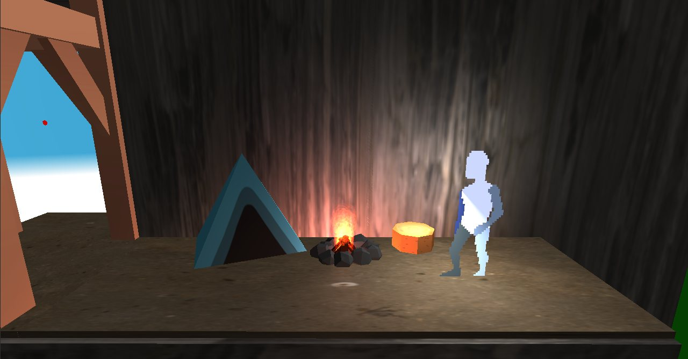
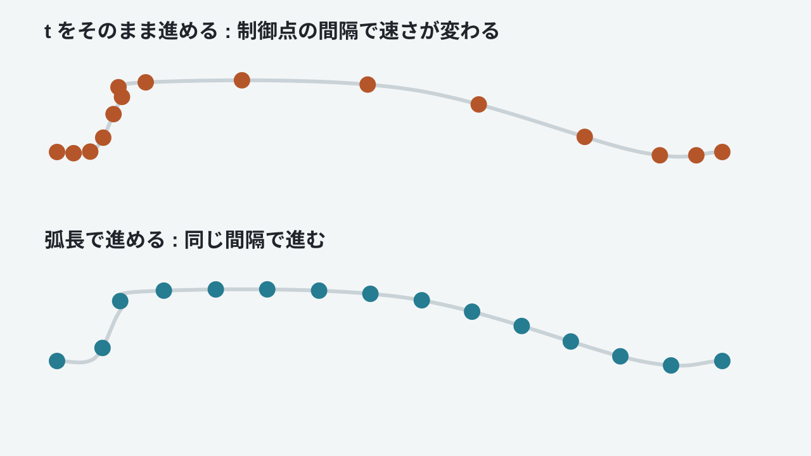
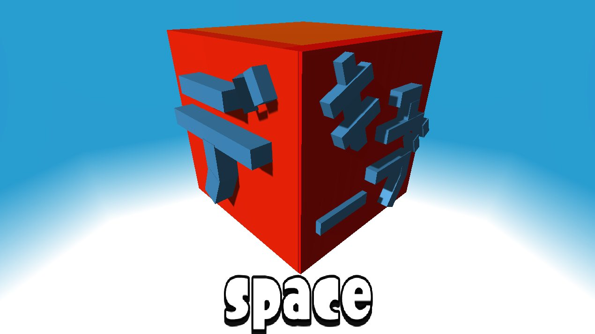
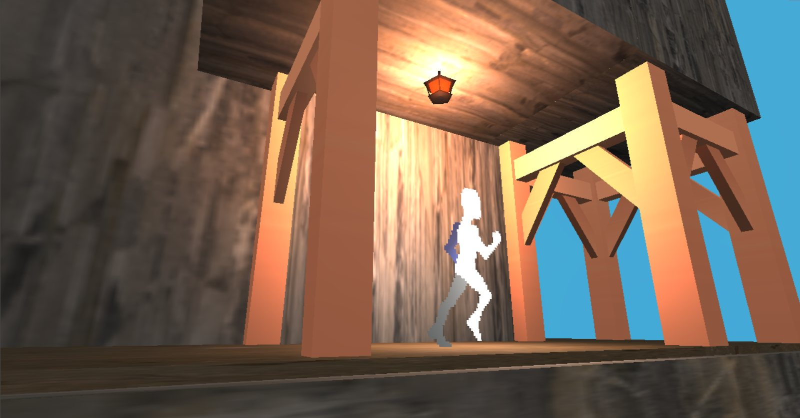
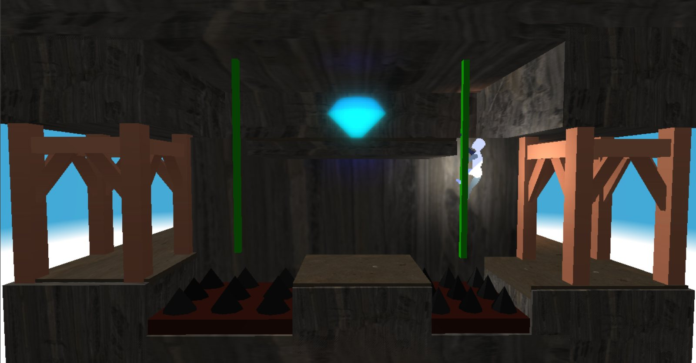
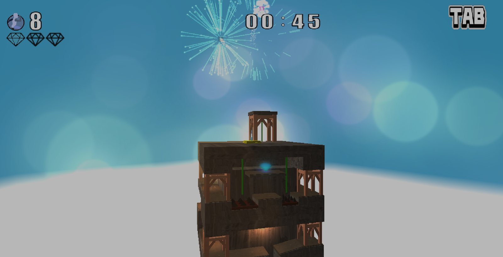

箱庭を一周しながら登る
2D アクションの操作感のまま、立体の建物の外周を進みます。
MAIN PROJECT / 2.5D
宙に浮かぶ箱庭を、2D アクションの操作感で登っていくゲームです。「世界を探索している感覚」を目標に、光の演出とカメラワークを作り込みました。

01
作品概要

2.5D ゲームとして「ワールドを探索している感覚」をプレイヤーに与えることを目標に、雰囲気作りやキャラクターの見せ方を重視しました。
移動に Catmull-Rom スプラインを使っているので、その移動に合わせたツタの上り下りと、スプラインの乗り換え時のカメラワークに苦労しました。
02
プレイ動画
03
ゲームの特徴
2D アクションの操作感のまま、立体の建物の外周を進みます。
カメラが建物に沿って回り込むので、同じ建物でも場所ごとに見え方が変わります。
ダイヤの収集、ツタの上り下り、とげ、敵、中間地点、残機を組み合わせました。
ページが3Dでめくれて、ページの音も鳴ります。
04
技術面の工夫

| 仕組み | 内容 |
|---|---|
| ステートパターン | Idle、Run、Jump、Fall、Hold、Dead。状態ごとにスプライン追従か自由移動かを持つ |
| シーンスタック | Push / Pop 方式。背景を描き続けるオーバーレイでポーズ画面を実現 |
| サブシーン | ゲーム内の開始、プレイ、リザルト、ゲームオーバーを分離 |
| ファクトリ | ラムダ登録で、JSON の名前からオブジェクトを生成 |
| データ駆動 | ステージ配置、スプライン、プレイデータを JSON で管理 |
05
ギャラリー




06
使用素材